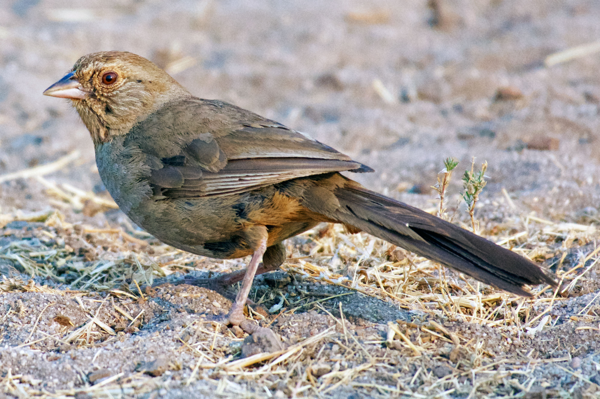
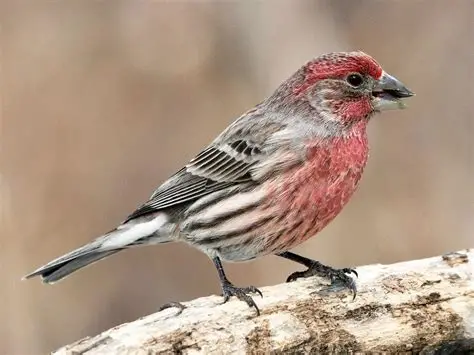
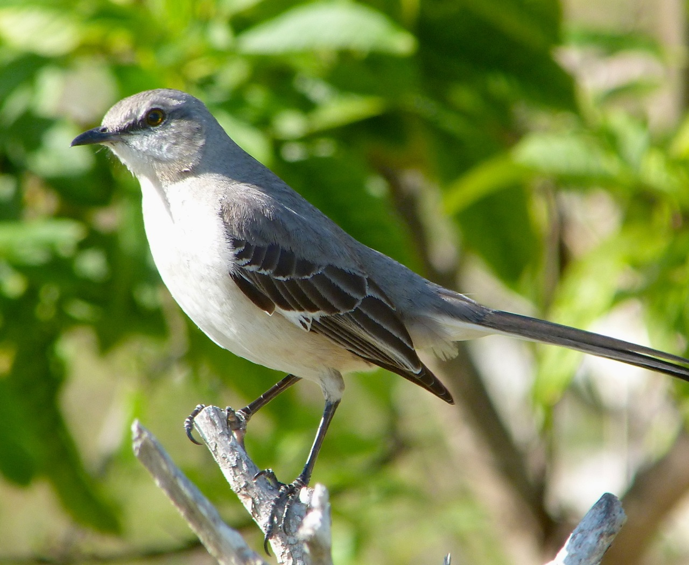
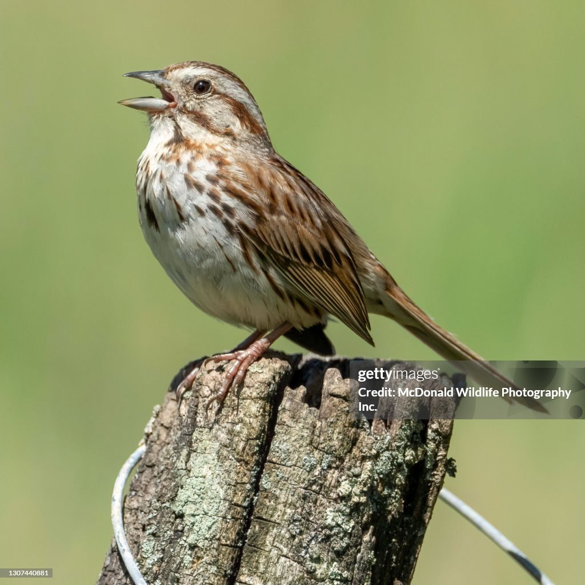
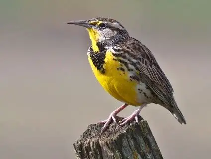
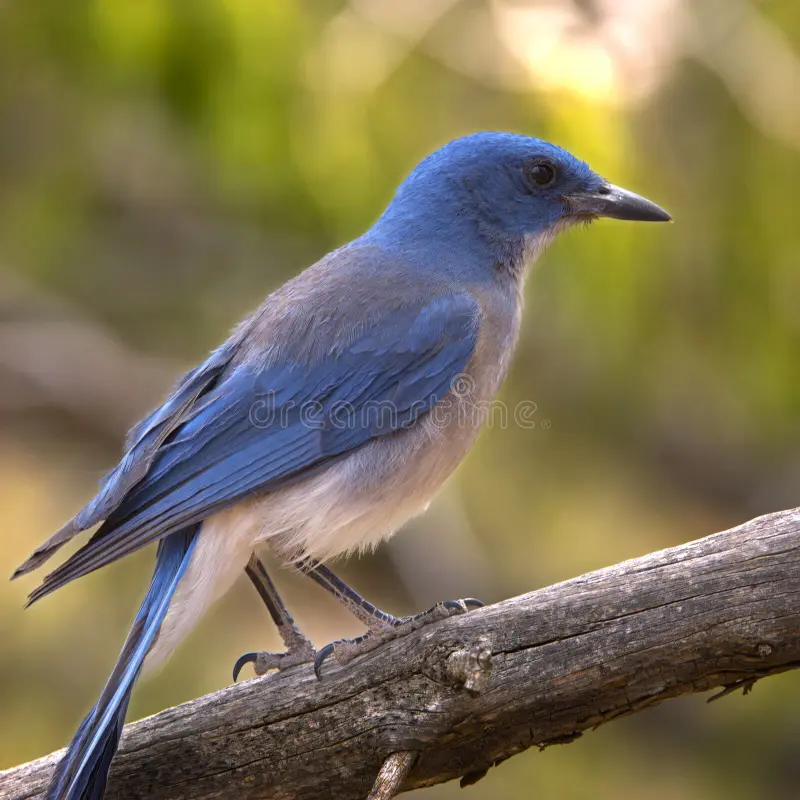

I'M A CALIFORNIA TOWHEE GLAMOUR BIRD
I may be prompted by a tireless knocking at your windows or car mirror

I'M A HOUSE FINCH BIRD
I build my nest in cavities, building, hanging paints, and other cup-shaped outdoor decoration

I'M A NORTHERN MOCKINGBIRD
My mimoking ability, as reflected by name mean's many-tongued mimio

I'M A SONG SPARROW BIRD
I use melodious and fairly complex song to declare ownership of territory attract females

I'M A WESTERN MEADOWLARK
My buoyant, flutelike melody can brighten anyone's day.

I'M A WESTERN SCRUB JAYBIRD
I am a fixture of dry shrublands, oak woodlands, and conspicuous visitors to backyards.